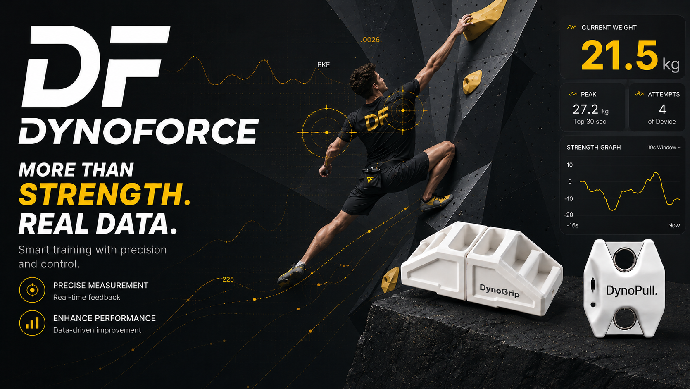
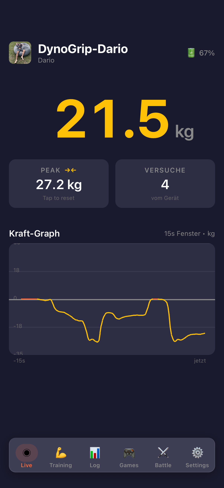
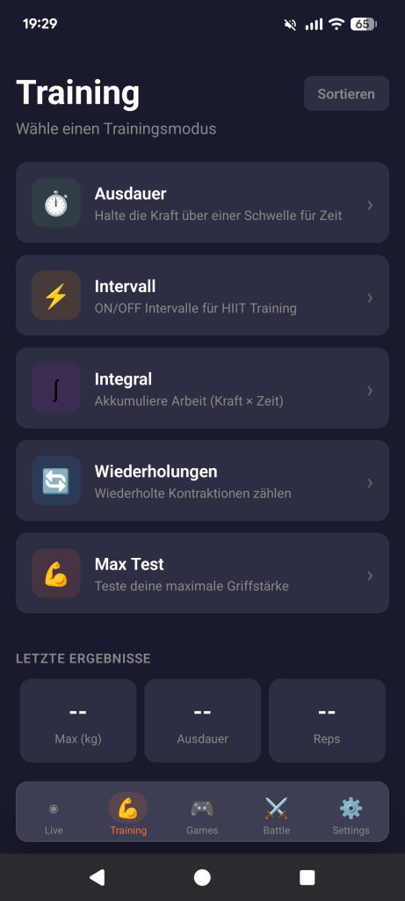
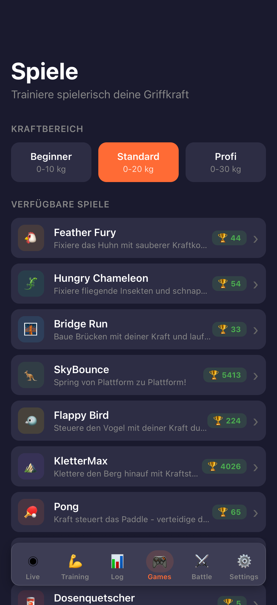
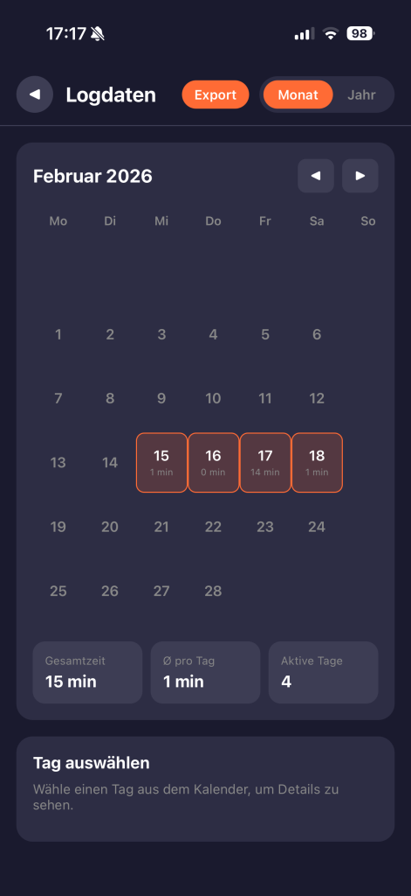
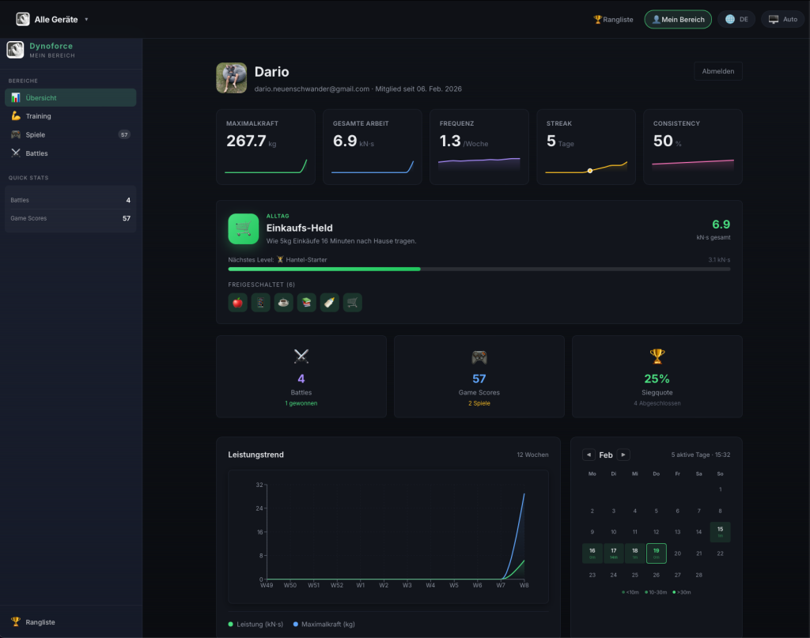

DynoGrip
Ein kompaktes, modulares Kraftmess- und Trainingsgerät für Finger-, Zug- und Krafttraining. Vollständig in die DynoForce App integriert.
Mehr zu DynoGrip →DynoForce ist ein modulares Kraftmess-System für Finger-, Zug- und Krafttraining. Entwickelt für Athleten, systematisches Training und Rehabilitation – für objektive Daten statt subjektivem Gefühl. Die Plattform ist für iPhone, Android und als Web App verfügbar.

DynoForce kombiniert spezialisierte Hardware mit einer zentralen App. So entsteht ein flexibles System für präzises Training, Tests und kontrollierte Belastungssteuerung.
Ein kompaktes, modulares Kraftmess- und Trainingsgerät für Finger-, Zug- und Krafttraining. Vollständig in die DynoForce App integriert.
Mehr zu DynoGrip →Der DynoPull erfasst Zugkräfte bis 150KG – für Fingerboard, Kletterwand oder Kraftraum mit präziser Messung und klarer Auswertung.
Mehr zu DynoPull →Die App zeigt nicht nur Zahlen, sondern macht Training direkt verständlich: Live-Werte, Trainingsmodi, Spiele wie SkyBounce, Bridge Run, Feather Fury und Hungry Chameleon sowie langfristige Auswertung greifen ineinander.





Neben der mobilen App zeigt auch die Web-Oberfläche, wie stark das System über längere Zeiträume wirkt: Trainingsverläufe, persönliche Statistiken, Ranglisten und Fortschritt werden sichtbar und emotional nachvollziehbar.
Maximalkraft, Arbeit, Frequenz, Streak und Consistency in einer einzigen Übersicht.
Optionale Online-Funktionen wie Leaderboards und Community-Statistiken machen Fortschritt sozial erlebbar.
Die Stärke liegt in der Verbindung aus Device, App und langfristiger Auswertung.
Hier findest du ausführliche Antworten zu den Devices, zur App, zum Training und zur technischen Nutzung. Die Fragen sind nach Themen gegliedert, damit du schnell zur passenden Antwort kommst.
DynoForce ist ein modulares System zur digitalen Kraftmessung und Trainingsauswertung. Die Devices erfassen deine Kraft, die DynoForce App zeigt die Messung live an und ermöglicht strukturierte Tests, Trainings und Games. Optionale Online-Funktionen ergänzen das System um längerfristige Statistiken, Backups und Ranglisten.
DynoForce richtet sich an alle, die Kraft nicht nur nach Gefühl trainieren, sondern objektiv messen möchten. Typische Anwendungen sind Bouldern und Klettern, Fingerkrafttraining, Calisthenics, allgemeines Krafttraining, Leistungstests und kontrollierter Belastungsaufbau. Das System kann dabei sehr unterschiedlich eingesetzt werden, vom kurzen Maximalkrafttest bis zum regelmässigen Training mit Verlaufskontrolle.
DynoGrip ist das vielseitige Handheld-Device. Es besitzt integrierte Griffmöglichkeiten und eignet sich für Fingerkraft sowie Zug- und Druckanwendungen bis 100 kg. DynoPull ist ein kompaktes Zugmessgerät bis 150 kg und eignet sich besonders für externe Griffe, Fingerboards, Kletterwände und andere Zug-Setups. Beide Devices arbeiten mit der DynoForce Plattform.
Wenn du ein direkt einsatzbereites Gerät für Fingerkraft, Griffkraft sowie Zug und Druck suchst, ist DynoGrip die vielseitigere Wahl. Wenn du hauptsächlich Zugkraft messen und dafür eigene Griffe, Slings, Fingerboards oder andere externe Setups verwenden möchtest, passt DynoPull besser. Die Produktseiten zeigen die beiden Konzepte im Detail.
DynoGrip misst Kräfte von 0 bis 100 kg und ist für kontrollierte Handheld-Anwendungen ausgelegt. Durch die integrierten Griffbereiche kann es für Finger- und Griffkraft eingesetzt werden. Zusätzlich sind Zug- und Druckanwendungen mit einer oder zwei Händen möglich, solange das Gerät bestimmungsgemäss als Handheld verwendet wird.
DynoPull ist auf Zugmessungen von 0 bis 150 kg spezialisiert. Es eignet sich beispielsweise für Fingerboards, Kletterwand-Setups, externe Griffe oder Kraftübungen im Trainingsraum. Durch das kompakte Format lässt sich das Messmodul flexibel in unterschiedliche Zugaufbauten integrieren.
Ja. Die Plattform ist bewusst modular aufgebaut. Je nach Device und Anwendung kannst du verschiedene Griffe und Attachments verwenden oder eigene Lösungen entwickeln. In der 3D-Bibliothek findest du CAD-Dateien, STL-Downloads und technische Informationen. Wichtig ist, dass Belastungsrichtung, Messbereich und Sicherheitshinweise des jeweiligen Devices eingehalten werden.
Nein. DynoGrip ist als reines Handheld-Gerät vorgesehen und soll während der Messung frei in der Hand gehalten werden. Es darf nicht festgebunden, eingehängt, eingeklemmt oder als Befestigungs- beziehungsweise Sicherungspunkt verwendet werden. Für Zugmessungen mit festem Aufbau oder externen Griffen ist DynoPull das passendere Konzept.
Nein. Für die grundlegende Nutzung der DynoForce App und die direkte Messung ist kein Account erforderlich. Ein Account wird erst dann relevant, wenn du optionale Online-Funktionen wie Backups, Web-Dashboard oder Ranglisten nutzen möchtest.
Nein. Die wesentlichen Mess- und Trainingsfunktionen der App funktionieren offline. Dadurch kannst du DynoForce auch dort verwenden, wo kein WLAN oder Mobilfunk verfügbar ist. Eine Internetverbindung wird nur für Funktionen benötigt, die Daten mit Online-Diensten synchronisieren oder Web-Inhalte verwenden.
Die DynoForce App ist für iPhone und Android verfügbar und kann über den Apple App Store beziehungsweise Google Play installiert werden. Zusätzlich gibt es Web-Funktionen für Statistiken, Auswertungen und Ranglisten. Die mobile App bleibt dabei die zentrale Oberfläche für die Verbindung mit den DynoForce Devices.
Die Verbindung erfolgt drahtlos über Bluetooth Low Energy (BLE). Schalte das Device ein, aktiviere Bluetooth am Smartphone und öffne in der DynoForce App die Geräteverbindung. Dort kannst du das verfügbare DynoGrip oder DynoPull auswählen. Je nach Betriebssystem müssen die erforderlichen Bluetooth-Berechtigungen für die App freigegeben sein.
Ja, aber nicht gleichzeitig. Ein Device kann jeweils mit einem Smartphone verbunden sein. Wenn du zu einem anderen Smartphone wechseln möchtest, trenne zuerst die bestehende Verbindung beziehungsweise warte, bis das Device nicht mehr verbunden ist, und verbinde es danach mit dem anderen Smartphone.
Die App enthält verschiedene Trainings- und Testmodi für unterschiedliche Ziele. Dazu gehören unter anderem Ausdauer, Intervall, Integral, Wiederholungen und Max-Test. So kannst du sowohl einzelne Leistungstests als auch wiederholbare Trainingsabläufe durchführen und deine Belastung systematischer steuern.
Ja. In der Live-Ansicht zeigt die App den aktuellen Kraftwert und den zeitlichen Verlauf der Messung an. Dadurch siehst du direkt, wie schnell du Kraft aufbaust, wie stabil du eine Belastung halten kannst und wie sich die Kraft während eines Versuchs verändert.
Ja. DynoForce verbindet Kraftmessung auch mit spielerischen Anwendungen. In der App stehen Games wie SkyBounce, Bridge Run, Feather Fury und Hungry Chameleon zur Verfügung. Dabei wird deine reale Kraft zum Eingabewert für das Spiel und Training erhält dadurch einen zusätzlichen motivierenden Faktor.
Ja. Die App enthält Logdaten und eine Kalenderansicht der Trainingshistorie. Damit kannst du frühere Sessions nachvollziehen und Entwicklungen über längere Zeiträume vergleichen. In Verbindung mit den optionalen Web-Funktionen stehen zusätzliche Statistiken und Verlaufsansichten zur Verfügung.
Das Web-Dashboard erweitert die mobile App um eine längerfristige Sicht auf deine Daten. Dort können Trainingsverläufe, persönliche Statistiken und Kennzahlen übersichtlich dargestellt werden. Die Web-Funktionen sind eine Ergänzung zur App und besonders interessant, wenn du Fortschritte über längere Zeit beobachten möchtest.
Ja. DynoForce bietet optionale Ranglisten- und Community-Funktionen. Dadurch können Resultate nicht nur persönlich ausgewertet, sondern je nach Funktion auch mit anderen verglichen werden. Wer DynoForce ausschliesslich für das eigene Training verwenden möchte, muss diese Online-Funktionen nicht nutzen.
Nein. Die DynoForce Devices werden vor der Auslieferung kalibriert und genullt. Für die normale Verwendung musst du deshalb vor dem Training weder eine Kalibrierung noch ein manuelles Nullstellen oder Tarieren durchführen. Device einschalten, mit der App verbinden und du kannst mit der Messung starten.
DynoGrip ist für einen Messbereich von 0 bis 100 kg ausgelegt. DynoPull misst Zugkräfte von 0 bis 150 kg. Diese Bereiche gehören zum vorgesehenen Einsatz der Devices und dürfen nicht überschritten werden.
DynoGrip und DynoPull unterstützen OTA-Updates. OTA steht für „Over-the-Air“ und bedeutet, dass die Firmware drahtlos über die App und Bluetooth aktualisiert werden kann. Das Device muss dafür nicht geöffnet oder für das Update per Datenkabel mit einem Computer verbunden werden.
Die DynoForce Devices besitzen wiederaufladbare Akkus. DynoGrip verfügt über einen USB-C-Ladeanschluss. Hinweise zum sicheren Laden, zur Pflege des Akkus und zum empfohlenen Umgang findest du in der jeweiligen Bedienungsanleitung beziehungsweise im DynoForce Wiki.
Die Laufzeit hängt vom Device und von der tatsächlichen Nutzung ab. DynoPull ist auf eine lange Laufzeit ausgelegt und wird auf der Produktseite mit 80 Stunden Laufzeit angegeben. Bei DynoGrip hängt die tatsächliche Laufzeit unter anderem von Nutzung, Umgebung und App-Verbindung ab, weshalb dafür keine feste Stundenangabe versprochen wird.
Prüfe zuerst, ob das Device eingeschaltet und Bluetooth am Smartphone aktiv ist. Stelle sicher, dass die erforderlichen Bluetooth-Berechtigungen für die App freigegeben sind und dass das Device nicht bereits mit einem anderen Smartphone verbunden ist. Falls es weiterhin nicht erscheint, starte Device und App neu und versuche die Verbindung nochmals in geringer Distanz.
Die Devices sind nicht für den Einsatz im Wasser vorgesehen. Sie sollten trocken gehalten und vor Spritzwasser geschützt werden. Reinige das Gehäuse nur mit einem weichen, leicht feuchten Tuch und lade ein Device niemals mit feuchten Anschlüssen.
Nein. DynoForce ist ein Performance- und Trainingssystem und kein Medizinprodukt. Die Messwerte können dir helfen, Belastungen objektiv zu beobachten und Training nachvollziehbarer zu gestalten, ersetzen aber keine medizinische Diagnose, Behandlung oder professionelle medizinische Beurteilung.
DynoForce kann genutzt werden, um Kraft und Belastung beim kontrollierten Trainingsaufbau messbar zu machen. Gerade bei niedrigen und schrittweise steigenden Belastungen kann objektives Feedback hilfreich sein. Da DynoForce jedoch kein Medizinprodukt ist, sollte eine medizinische Rehabilitation immer nach den Vorgaben der behandelnden Fachperson erfolgen.
Nein. Die DynoForce Devices sind für Sport, Training und Leistungsmessung vorgesehen. Sie sind keine persönliche Schutzausrüstung, kein Hebezeug und keine Sicherheitskomponente. Verwende sie deshalb niemals für Absturzsicherung, Rettung, sicherheitskritische Lasten oder andere Anwendungen, bei denen ein Messfehler Personen oder Material gefährden könnte.
DynoForce Produkte und verfügbares Zubehör findest du im offiziellen DynoForce Shop. Dort siehst du die aktuell verfügbaren Devices, Varianten und Zubehörteile.
Technische Downloads zu Griffen und Attachments findest du unter download.dynoforce.ch. Dort stellen wir CAD-Dateien, STL-Dateien und weitere Informationen für kompatible beziehungsweise selbst entwickelte Lösungen bereit.
Ausführliche Informationen zur Einrichtung, Bedienung, Sicherheit und Fehlerbehebung findest du im DynoForce Wiki und in den produktspezifischen Anleitungen. Die FAQ auf dieser Seite beantwortet bewusst die häufigsten Fragen; für technische Details ist das Wiki die zentrale Anlaufstelle.
Wenn du im FAQ, Wiki oder in der Bedienungsanleitung keine passende Antwort findest, kannst du uns direkt kontaktieren. Beschreibe am besten kurz, welches Device du verwendest und worum es geht, damit wir deine Frage möglichst gezielt beantworten können.
Im Wiki findest du die technischen Details. Bei einer individuellen Frage helfen wir dir direkt weiter.
Entdecke das DynoForce System und finde die passende Lösung für Finger-, Zug- und Krafttraining – klar, fokussiert und ohne unnötige Ablenkung.